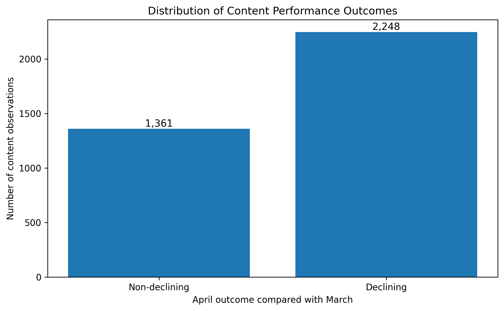
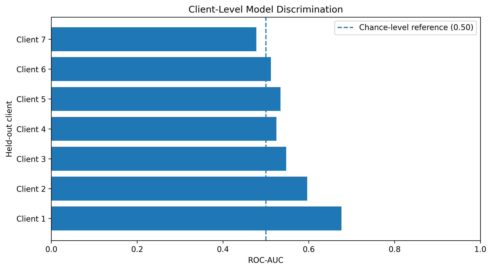
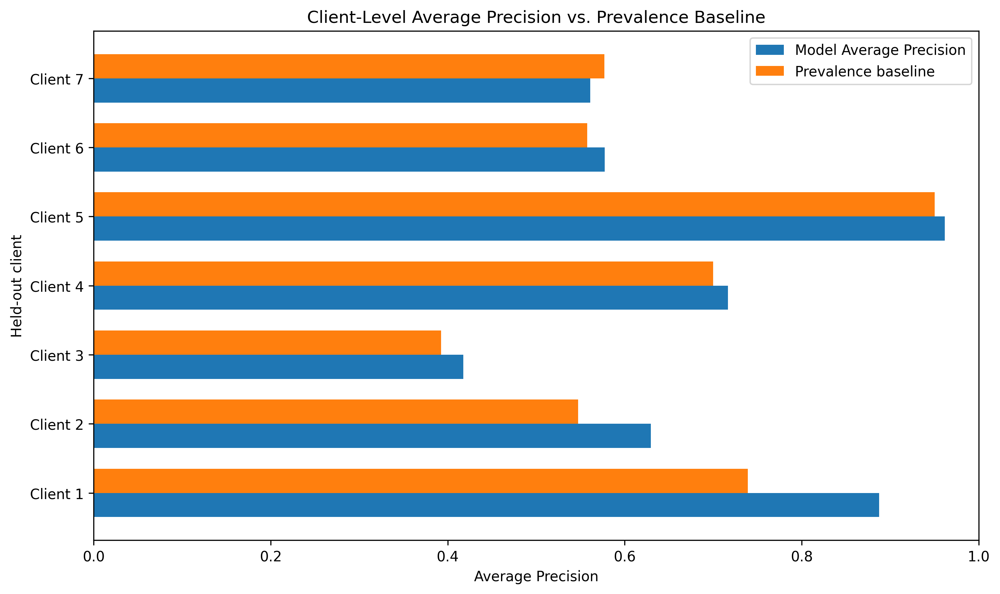

1. Abstract
Can March 2026 search and analytics signals help identify content experiencing a decline in average daily Google Search Console clicks during April 2026? This study used five March-derived features and a Logistic Regression model evaluated through Leave-One-Client-Out cross-validation across 19 clients and 3,609 client-content pairs. The model achieved 54.70% accuracy and 47.88% balanced accuracy, both below the majority-class baseline. In a subgroup of seven clients with at least 20 held-out observations, mean ROC-AUC was 0.5527 and six clients exceeded their individual average-precision prevalence baselines. These findings indicate modest and variable ranking signals, but do not establish reliable automated prediction or the effectiveness of content refreshes.
2. Introduction / Problem Statement
Organic search performance is an important source of information for understanding how online content reaches its audience. However, changes in search clicks do not always reveal whether a content item has genuinely deteriorated or whether its performance has fluctuated because of demand, competition, visibility or measurement coverage.
This study investigates whether historical search and analytics signals can help identify client-content pairs that experience a short-term decline in search clicks. The objective is to evaluate the usefulness of a simple machine learning approach while accounting for differences between clients during validation.
The intended decision is whether historical performance signals can provide supplementary evidence for human investigation. The study does not attempt to prove that declining content requires refreshing or that a refresh will improve performance.
3. Data and Data Contract
Dataset source and scope
This study uses the FlyRank pseudonymized warehouse release flyrank_pseudonymized_warehouse_release_v20260703.
The warehouse contains daily content-performance records, but this experiment uses only two monthly partitions:
- March 2026: feature construction.
- April 2026: outcome and label construction.
The experiment does not claim to have modelled the entire 78.8-million-row warehouse.
Data grain
The unit of analysis is one unique client-content pair: client_hash_id × content_hash_id. Daily observations were aggregated to this level separately for the March feature window and April outcome window.
March features
- Average daily GSC impressions.
- Average daily GSC clicks.
- Average daily GSC average position.
- Average daily GA4 pageviews.
- Average daily GA4 organic sessions.
GSC-derived counts were normalized by the number of GSC-available reporting days. GA4-derived counts were normalized separately by the number of GA4-available reporting days. Pairs were required to have at least 20 reporting days for each data source during March.
April outcome and target
April average daily GSC clicks were calculated using GSC-available reporting days. Pairs were required to have at least 20 GSC reporting days in April.
- 1: April average daily GSC clicks were lower than March.
- 0: April average daily GSC clicks were equal to or higher than March.
Data quality and exclusions
- Source availability flags were respected.
- Zero-filled values from unavailable sources were not treated as genuine zero activity.
- Client and content identifiers were retained for grouping and validation, but excluded from model features.
- April outcome fields and the target label were excluded from model inputs.
- Each source's reporting-day count was used to normalize its corresponding March count features.
- Eligible client-content pairs: 3,609
- Distinct clients: 19
- Declining observations: 2,248
- Non-declining observations: 1,361
- Overall decline prevalence: approximately 62.3%
4. Methodology
4.1 Prediction task
The task was formulated as binary classification. The model uses March 2026 performance signals to estimate whether a client-content pair will experience a reduction in average daily GSC clicks during April 2026. The target is observational and describes a change in search clicks, not the cause of that change.
4.2 Feature selection
gsc_impressionsgsc_clicksgsc_avg_positionga4_pageviewssessions_organic
The GSC and GA4 count features were normalized by their respective reporting-day counts. The March average daily GSC clicks are represented by gsc_clicks and were not added again as a duplicate feature. Client identifiers and content identifiers were used only to define validation groups. April measurements, label fields, and other future outcome information were excluded from model inputs.
4.3 Model
A Logistic Regression classifier was used with class-balanced weighting. The preprocessing and model pipeline included:
- Median imputation for missing feature values.
- Standard scaling of numeric features.
- Logistic Regression with
class_weight="balanced".
Preprocessing was fitted independently within each training fold to avoid fitting transformations on held-out client data.
4.4 Validation design
The primary validation strategy was Leave-One-Client-Out (LOCO) cross-validation. In each fold, one entire client was held out for testing, the remaining clients were used for training, and the model generated predictions for the held-out client's observations. The process was repeated until every client had been held out once.
This design prevents observations belonging to the same client from appearing in both the training and test sets within a fold. The evaluation covered 19 clients and produced 19 held-out folds. Six clients contained only one target class, so ROC-AUC and Average Precision could not be calculated meaningfully for those folds.
4.5 Baselines and evaluation metrics
The model was compared with a majority-class classification baseline.
- Accuracy
- Balanced accuracy
- ROC-AUC
- Average Precision (AP)
ROC-AUC and Average Precision were evaluated for clients with both target classes. For each client, the AP baseline was defined as that client's observed positive-class prevalence.
4.6 Leakage and validation safeguards
- April outcome measurements were used only to construct the target.
- Client and content identifiers were excluded from model features.
- The target label was excluded from model inputs.
- Preprocessing was fitted within each training fold.
- Entire clients were held out during validation.
- A deliberate target-leakage diagnostic was tested separately and excluded from the valid experiment.
4.7 Scope of validation
LOCO evaluates performance on held-out clients within the March-to-April 2026 transition. It does not establish performance across future months or across other time periods. The small number of clients, highly unequal client sample sizes, and single-class client folds limit the strength of generalization claims.
5. Results
5.1 Dataset and target distribution
The corrected modelling dataset contained 3,609 client-content pairs across 19 clients.
- 2,248 (62.3%) were labelled as declining.
- 1,361 (37.7%) were labelled as non-declining.
The target distribution indicates that declining observations formed the majority class.

5.2 Overall classification performance
| Metric | Model | Majority-class baseline |
|---|---|---|
| Accuracy | 54.70% | 62.29% |
| Balanced accuracy | 47.88% | 50.00% |
The model did not outperform the majority-class baseline on either classification metric. This result indicates that the current feature set did not provide sufficient evidence for reliable binary classification under the client-held-out validation design.
5.3 Client-level ranking performance
ROC-AUC and Average Precision were evaluated separately for held-out clients containing both target classes. Across 13 eligible clients:
- Mean client-level ROC-AUC: 0.5271.
- Mean client-level Average Precision: 0.7238.
- Mean client-level AP prevalence baseline: 0.6573.
- 11 of 13 clients exceeded their own AP prevalence baseline.
These averages give each eligible client equal weight, rather than allowing the largest client to dominate the summary.
5.4 Results for clients with at least 20 held-out observations
Seven clients met this threshold.
| Metric | Result |
|---|---|
| Clients evaluated | 7 |
| Mean ROC-AUC | 0.5527 |
| Mean Average Precision | 0.6787 |
| Mean AP baseline | 0.6377 |
| Clients above AP baseline | 6 of 7 |


The subgroup showed modest ranking performance. However, the largest client, containing 2,184 observations, had an ROC-AUC of 0.4780 and an AP below its prevalence baseline. The results therefore varied across clients and do not establish consistent predictive performance.
5.5 Interpretation
The model showed some ability to rank declining observations above a prevalence-only reference for several clients. However, its overall classification accuracy and balanced accuracy were below the majority-class baseline.
The difference between the ranking and classification results is important: a model may rank observations somewhat better than a simple reference without being reliable enough to classify them correctly.
These findings support further investigation of client-specific search-performance patterns, but they do not justify automated decisions about which content should be refreshed.
6. Limitations and Honest Framing
6.1 Limited client coverage
The corrected modelling dataset contains 3,609 client-content pairs from only 19 clients. The number of observations is highly unequal across clients, with one client contributing 2,184 observations. Consequently, the overall dataset is not evenly representative of all clients.
6.2 Small and single-class client groups
Six clients contained only one target class in their held-out observations. ROC-AUC and Average Precision could not be calculated meaningfully for these clients. Even among the seven clients with at least 20 observations, sample sizes varied substantially. Client-level estimates based on small samples may be unstable.
6.3 Limited time coverage
The experiment examines only one transition: March 2026 features and April 2026 outcomes. Although the validation strategy holds out entire clients, it does not test generalization across multiple future months, seasonal changes, or different market conditions.
6.4 Imperfect measurement
The target is based on changes in average daily Google Search Console clicks. Search clicks can fluctuate for reasons unrelated to content quality, including changes in demand, competition, seasonality, search visibility, and measurement coverage. The target therefore represents observed short-term search-click decline, not a confirmed content problem.
6.5 Feature limitations
The five selected features provide a limited representation of content performance. In particular, average GSC position was calculated as a simple average of daily average positions rather than an impression-weighted average. This may affect how position changes are represented.
6.6 Predictive performance limitations
The model's overall accuracy (54.70%) and balanced accuracy (47.88%) were below their respective majority-class reference values. Client-level ranking results were modest and varied between clients. The pooled out-of-fold ROC-AUC and Average Precision were not treated as primary ranking results because predictions came from separately fitted fold models and may not be directly comparable across clients.
6.7 No causal or intervention claims
This study did not conduct a controlled content-refresh experiment. It cannot establish that refreshing content would increase clicks, that any feature caused a decline, or that the model can identify content that will benefit from intervention. The model score is not a calibrated probability of refresh success.
6.8 Appropriate interpretation
The results should be treated as exploratory evidence about the relationship between historical performance signals and subsequent search-click changes. The model is a research prototype for further evaluation and human review. It is not a production-ready decision system and should not be used to automate content-refresh decisions.
7. Ranked Recommendations and Action Playbook
The findings suggest that search-performance monitoring should prioritize evidence-based investigation rather than automatic content-refresh decisions.
Priority 1 — Establish a consistent measurement baseline
- Track the number of GSC and GA4 reporting days separately.
- Normalize count-based metrics by available reporting days.
- Exclude or flag observations with insufficient reporting coverage.
- Avoid interpreting unavailable-source values as genuine zero activity.
Reason: The data-coverage audit showed that differences in source availability can affect feature construction and target labels.
Priority 2 — Investigate sustained search-click declines
- Compare equivalent reporting windows.
- Check whether the decline is sustained rather than a short-lived fluctuation.
- Review impressions and average position alongside clicks.
- Investigate changes in search demand and competition before assigning a content-related explanation.
Reason: The target captures observed click changes, but does not identify their causes.
Priority 3 — Use model scores only as a review aid
- Treat model rankings as exploratory prioritization signals.
- Require a human reviewer to inspect the underlying search metrics.
- Compare model rankings with simple prevalence-based references.
- Re-evaluate performance separately for each client.
Reason: Ranking performance was modest and varied across clients, while overall classification performance did not exceed the majority-class baseline.
Priority 4 — Improve client-level evaluation
- Collect more observations from clients with limited history.
- Repeat validation across additional monthly transitions.
- Report client-level sample sizes alongside evaluation metrics.
- Investigate why the largest client did not exceed its AP baseline.
Reason: The current evaluation covered only 19 clients, and the largest client showed weak ranking performance.
Priority 5 — Test content-refresh effectiveness separately
- Design a controlled or carefully matched refresh study.
- Record which content items receive an intervention and when.
- Compare outcomes against an appropriate untreated group.
- Evaluate changes in clicks and impressions over a predefined follow-up period.
Reason: The current observational experiment does not estimate the causal effect of content refreshes.
Recommended operational workflow
- Check reporting coverage.
- Identify content with a sustained change in search performance.
- Review impressions, clicks and position together.
- Use model rankings only as supplementary evidence.
- Conduct human investigation.
- Record any intervention and evaluate its subsequent outcome.
8. Reproducibility and Research Artifacts
8.1 Source repository
The project source code, notebooks, supporting documentation and research artifacts are maintained in the public GitHub repository: FlyRank ML Internship Repository.
8.2 Data source
The experiment uses the pseudonymized FlyRank warehouse release flyrank_pseudonymized_warehouse_release_v20260703.
The warehouse dataset is hosted on Hugging Face: FlyRank Internship Warehouse.
Although the full warehouse release contains approximately 78.8 million daily performance records, this experiment uses the March and April 2026 monthly partitions rather than analysing the entire release. Access to the warehouse may require authorization. Authentication credentials must be stored securely in the execution environment and must never be committed to the repository.
8.3 Experiment configuration
| Component | Configuration |
|---|---|
| Feature period | March 2026 |
| Outcome period | April 2026 |
| Observation unit | Client-content pair |
| Final observations | 3,609 |
| Clients | 19 |
| Features | 5 |
| Model | Logistic Regression |
| Class weighting | Balanced |
| Validation | Leave-One-Client-Out |
| Imputation | Median |
| Scaling | StandardScaler |
8.4 Reproduction procedure
A researcher with authorized access to the warehouse can reproduce the experiment by:
- Installing the required Python packages.
- Configuring Hugging Face authentication through a secure environment variable or notebook secret.
- Loading the March and April 2026 daily performance partitions.
- Applying the source-availability and reporting-day eligibility rules.
- Aggregating the March features and April outcomes at client-content level.
- Constructing the binary decline label.
- Running the Logistic Regression pipeline using Leave-One-Client-Out validation.
- Calculating the classification and client-level ranking metrics.
- Comparing model results with the corresponding baseline metrics.
- Generating the three research figures using the corrected 3,609-observation dataset and exporting the approved aggregate results.
8.5 Reproducibility and privacy safeguards
- Authentication tokens and private credentials must not be included in public artifacts.
- Client and content identifiers are pseudonymized and should not be used to identify entities.
- No private client names, URLs, search queries or identifiable business information should appear in the public paper.
- The final public artifacts should contain only approved aggregate results, methodology descriptions and safe visualizations.
- Exact reproduction may depend on continued availability and authorization of the warehouse release.
8.6 Supporting research artifacts
work/notebooks/capstone.ipynb— consolidated research record, methodology and final findings.work/notebooks/w03_data_contract.ipynb— warehouse data contract, feature construction, label definition and client-held-out validation.work/outputs/— approved aggregate metrics and experiment outputs, where available.work/figures/target_distribution.png— target distribution visualization.work/figures/client_level_roc_auc.png— client-level ROC-AUC visualization.work/figures/client_level_average_precision.png— Average Precision versus prevalence baseline visualization.docs/— public research paper and supporting documentation.
The consolidated capstone notebook and all referenced figures should be checked before final publication.
9. Acknowledgments and Data Credit
This research was completed as part of the FlyRank ML Internship.
The author acknowledges FlyRank for providing access to the pseudonymized warehouse dataset and the opportunity to investigate search-performance patterns through applied machine learning.
The analysis, methodology, interpretation and conclusions presented in this study are the author's work.
Built on the FlyRank ML Internship dataset.
All findings should be interpreted within the limitations of the selected data windows, available observations and validation design described in this paper.